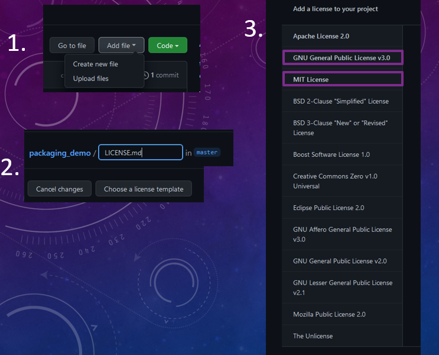

Add supporting files
Note: If you followed the instructions for initializing the repository, you will already have these - this section is here for the cases where you are working with your own repository!
There are a few files that you will always want, and it’s a good idea to add them sooner rather than later:
1. Add a license file
You cannot release your code without a license! This is what University policy says, what the open source community says, and what commone sense says! I actually fine the easiest way to do this is actually from within github;
click new_file, create new file
type LICENSE.md
click ‘choose a license template’
A number of templates will appear.
If you want to learn more about choosing a license, see this site.
For now, let’s keep it simple: I recommend one of two license for basically every project:
MIT: Basically, anyone can take your code and do whatever they want with it. This is a permissive license.
GNU GPL 3:People can do almost anything with your code, except build it into a closed source project. Changes to the code also have to be released under the same license. This is called copyleft.
There is also an in-between called lesser GPL.
Once you’ve chosen your license, github will automatically add it in a new branch. You should create a pull request and pull it into the main branch.

2. Add a .gitignore
It’s better to add a .gitignore to your repository sooner rather than later. Here’s a useful template.
3. add requirements.txt
People who want to develop this code will need to know what dependencies it has. This is different from the depencies to run the code (which are defined elsewhere) because the include things like testing, packaging, building documentation, etc.
It’s good practice to keep all these requirements in a file called e.g. dev_requirements.txt. An example of such a file and how to use it is provided in the packaging section.
4. Add README.md
A readme is the absolute minimum documentaiton requirement for your package. Below is our recomended readme template:
# Project Name
**Author:** *Author Name*
*Give a brief summary of the purpose of the code and what it does.*
## Setup/Build/Install
*How to setup, build and/or install your code here. If specific software packages, licenses, or hardware (e.g. high end GPUs) are requuired, please note this.*
## Usage
*How to use your code. Maybe add a minimum working example with a small dataset that any newcomer to the code can run with minimal issue. If there is a specific data set required to run the code, please list where this is. A good guideline is: if someone had to pick up your code tomorrow, how long would it take them to produce some basic results with it? If it's more than a few hours then you should do some work on the readme, the code, or both!*
## Directory Structure
*Briefly describe what is contained in each folder.*